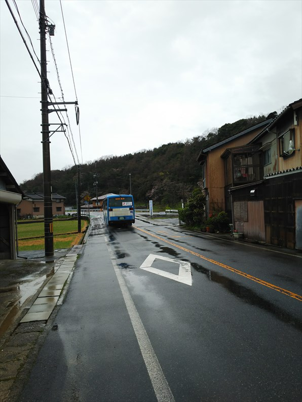

2024（R5） 4月3日 吉岡温泉
いよいよ愛する青春１８きっぷも廃止か？という噂も聞きますが、これで最後になっても悔いなし！と思えるかどうかわかりませんが、
まぁ仮に最後になってもええかと思える日帰り旅に行ってきました。
福知山駅。運よく、１１３系がお出迎え。
ちなみに、帰りの豊岡からも１１３系でした。この
１週間後ぐらいに、ひと編成（といっても２両です
が）の１１３系が廃車になった との情報が・・・
いまや貴重な昔ながらのＢＯＸ席。
春休み期間ですが平日ということもあって、ＢＯＸ
席を独占したまま城崎到着。
今日は天気も悪く、寒いのが玉にキズ。
城崎から先も、おなじみのキハです。
こちらも空いていて、ＢＯＸ席独占です。
鳥取まで行く列車なので助かります。
餘部鉄橋通過。
日本海を見ながらＢＯＸ席で過ごす旅は最高ですね。
鳥取到着。
時間があるので、駅前の喫茶店へ。レトロ喫茶とい
うことで入りましたが、単にボロいだけの店でした。
駅前からバスです。
そう、今回の行先は、吉岡温泉です。

湖山池のほとりを通って、温泉に到着。
バス停は街のはずれです。
温泉街に入っていくと、桜も７分咲で、それっぽい雰囲気になってき
ました。
小川に柳、っていいっすね。
共同浴場発見！と思いましたがこれ、もうやってな
いそうです。
残念！
この奥の建物が新しい共同浴場です。手前のオブジ
ェみたいなんは、温泉が噴き出してます。
熱いお湯で有名な吉岡温泉ですが、新しい共同浴場
は浴槽が２つと露天もあって、熱湯苦手な私でも十
分楽しめました。
建物から出るときに、アジア系の団体さんが入って
きました。こんなとこまでインバウンドの波に飲み
込まれんの？勘弁してくれ・・・
今回の訪問はここだけ。素直にバスで帰ります。
湖山池。日本で一番大きい池だけに、なかなかデカ
いですね。
バスは最初から最後まで、客は私だけでした。
日本の公共交通はどうなるんやろ・・・
帰りもＢＯＸ席独占で日本海を見ながらの鈍行旅で
した。
餘部鉄？橋を渡るところ。
なくならんといてくれ～青春１８切符～！！